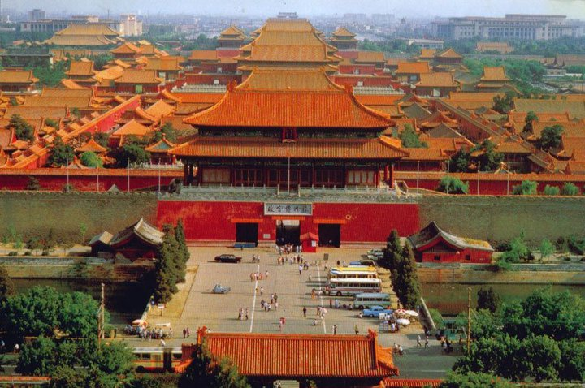

FAQ
Contents
1.Program eligibility & requirements
2.Program itinerary
3.Number of participants
4.Program cost & tuition
5.Classes in China
6.Hotels
7.Meals & food matters
8.Passport & visa
9.Trip experience
10.How is the program structured?
1.Program Eligibility & Requirements:
The only requirement for the study-in-China program is good academic standing, with a GPA of 2.5 or above. In some special cases, students whose GPA is below 2.5 can enroll in the program with the program director's approval.
You do not need to speak Chinese to be in the program, although you may want to learn some Chinese while in China. Most students who went in the past did not have any Chinese background; they just wanted to experience the Chinese culture.
Any students, both graduate and undergraduate, can enroll. Students from any college and university in the U.S. are welcome to attend our program.

In the past we had students from the following CUNY colleges:
1.Brooklyn College
2.Baruch College
3.Macaulay Honors College at CUNY
4.Hunter College
5.The City College
6.John Jay College of Criminal Justice
7.Queens College
8.New York City College of Technology
9.College of Staten Island
10.Borough of Manhattan Community College
11.Kingsborough Community College
12.LaGuardia Community College
13.Lehman College
14.Medgar Evers College
15.Queensborough Community College
16.York College
17.Bronx Community College
Many students from colleges and universities outside CUNY have chosen to attend our program. To name just a few here:
1.Columbia University
2.Cornell University
3.George Mason University
4.New York University
5.Pace University
6.Purchase University
7.Rutgers University of New Jersey
8.Miami University
9.SUNY at Albany, Stony Brook, etc
10.FIT of SUNY
11.Manhattan School of Music
12.Colby College
13.Nyack College
2. Itinerary:
We believe our China program offers the best itinerary, with the following attractive features:
We do not just stay in one place; we travel to 5-6 most famous cities of Beijing, Xi'an, Nanjing, Suzhou/Hangzhou, and Shanghai
In addition, we also try to organize side trips to other beautiful cities of Hong Kong, Guilin, Sanya (Oriental Hawaii), Yangzhou, Yellow Mountain, etc
Our students do not stay in student dorms; in each of the cities, we choose very nice hotels
We offer several courses (usually 4-5) on Chinese history, business, culture and language, so that all students can truly benefit from the study abroad experience
Professional travel agencies help us in each of the cities, with charter buses and English-speaking tour guides

Overall, the itinerary runs as follows:
1. Start our program in Beijing:
3 days, with trips to major historical and cultural sites
Then go to the ancient city of Xi'an
2. 2 days Terra Cotta Soldiers Museum, Ancient Silk Road, etc
Capital of Chinese ancient dynasties
The starting point of the ancient Silk Road
3. About 2 weeks in Nanjing:
for classes and side trips to Hong Kong, Guilin, Yangzhou, etc
Nanjing was the capital of 10 ancient Chinese dynasties
a modern and very beautiful city, with a lot to see, do and enjoy
stay in a downtown hotel, close to Nanjing University and many other universities
Side trip to the Yellow Mountain (Huangshan in Chinese). When in the Yellow Mountain, you really know it is the MOST beautiful mountain in this world
4. then Suzhou or Hangzhou (in the summer):
both are Paradise Cities
5. then 2 days & half in Shanghai:
The financial and commercial center of China (or the world to be)
with amazing groups of buildings of futuristic/modernistic architecture
You should look at "Itinerary & Excursions" of this website for more information.
Shanghai as host of the World Expo (May 1 to October 31, 2010) is really beautiful. For a quick video preview of City Rhapsody: the Site of Expo Shanghai, click here:
3. How many students participate?
We have been running this program very successfully every summer and winter since 2003. We often have about 50 students and sometimes as many as 75. Although the groups were not small, with help from the students, we managed it very well and everyone had a great experience
4. Program Cost & Tuition:
Our program cost includes the following:
1.Round-trip international airline tickets;
2.Excellent (most 4 star) hotels in the Chinese cities;
3.Sightseeing in 5 famous cities, including
4.admission tickets, tour guide service
5.most of the meals, &
6.all transportation within and between the 5 cities
Many, after much research and comparing, came to the conclusion: our program cost is the lowest in any study abroad in China programs, and we offer the best possible for this cost. We work very hard with our trip operators to bring the program cost down, so that this good opportunity can be affordable to many students.
As you can see, it is not possible for this low cost to include tuition. If you have financial difficulty, it is OK to take only one class, which will help you save some tuition money.
Tuition is lower per credit for in-state degree-seeking CUNY students. It is a bit more for international, out-of-state, non-CUNY, non-degree students. Please check the Brooklyn College website for accurate information about tuition rates for different student status here:

5. Classes:
We try to offer as many courses on Chinese history, culture, language and business as possible, so that students can truly get academic benefits from participating in our China trip.
Please note:
1. All our courses are part of the regular CUNY-Brooklyn College curriculum, for CUNY-BC credit.
2. All courses are taught in English, by professors who are experts in the area of study.
3. Students register, pay tuition and buy the textbook before departure. We just move the classes to China, and make the whole country our classroom.
4. At the end of the program, students will receive a transcript from Brooklyn College and the credits of the courses can transfer to their home college.
When applying and preparing for the trip, students should be aware of the following:
1. Indicate your course choices in Application. The decision about courses to be offered can only be made after all participating students have submitted their Application- Part II with course selections.
2. After we finalize the courses (about one month and half before departure), we will announce the classes to all the students making the trip. Students do not register for the courses. Brooklyn College will register students for the classes.
3. Students from other CUNY campuses will need to get their e-permit approved at their home campus and pay tuition at their home campus before they can be registered for their classes at Brooklyn College.
4. Students from Brooklyn College and from outside CUNY colleges do not need to apply for e-permit and they pay tuition at Brooklyn College after being registered for the classes.
Syllabi
All our course syllabi are posted on the program website under "Coursework." Students should read each syllabus for detailed information about the course they are interested in taking. You will find our requirements and assignments are both rigorous and reasonable.

Class Meetings
In China, classes are conducted in three venues: classroom meetings (lectures and discussions), site visits, and online interactions.
We try to arrange a good portion of work online at the blackboard website and require students to complete reading assignments and conduct discussions online before departure, as well as during the trip in China.
The value of a good study abroad program is to let students experience the country as much as possible. Therefore, while in China, we arrange visits to important historical and cultural sites, businesses, and government/non-government agencies, where students can build meaningful links with the texts they read.
Our class meetings in Nanjing normally take place in the hotel conference room, or in a café (with WiFi; past students called this classroom Oxford-style class). Each class session is for 3 hours, and classes run from morning until early evening. Not all classes meet every day.
We organize our classes in such a way that students will not only do good work for the courses, but also can have enough free time to make some side trips, explore on their own and enjoy the whole program. In the past, students managed the coursework very well even when some were taking two classes and made side trips.
6. Hotels:
Throughout the trip, we do not stay in student dorms, whose conditions are not what you want to enjoy.
Instead, in each of the cities, we stay in very nice hotels, with security guards at the door 24/7, and every day the maids change the towels, make the bed, and clean the room for us.
Each of the hotels provides all the conveniences we need: breakfast in buffet style, internet, international phones, laundry, wake-up calls, etc.

7. Meals & Food Matters:
We always ask the travel agencies to provide meals in the first two cities of Beijing and Xi'an, and also try to provide meals in Suzhou, or Hangzhou (and on side trips to Yellow Mountain or Guilin). After we get to Nanjing, meals will be on your own. However, breakfast (with many Chinese and western choices, from 6:30 to 9:30 am) is always included in each of the hotels throughout the program.
We plan our trip in such a way that students can have opportunities to make their own food choices because there are so many different tastes and it is not much fun to have group meals every day for 3-4 weeks. Besides, when we get to Nanjing, we will have different schedules for classes and other activities. You will appreciate freedom in making your food choices.
There are hundreds of restaurants of different styles and prices in Nanjing. Just a few minutes from our hotel, you will find a street of restaurants, called Shizi Qiao (Lion Bridge), by Hunan Road, where you can find all kinds of food.
Food prices can vary a lot, depending where, what and how you eat. Most places catering to ordinary people are generally inexpensive, for about $2-$5 per person on the average. However, those who want to dine in style and are willing to spend more also have many good choices. Of course, you will find McDonalds, Pizza Hut, FKC, Korean, Japanese, Indian, Italian, French, Russian, and other international cuisines in Nanjing.
You will have all kinds of choices for your meals in Nanjing. Those on vegetarian all managed very well in the past. If you are on kosher food, read the part on Jewish students.
8. Passport & Visa:
If you have a passport, include a copy of the photo page in your application. Your passport should be valid until 6 months beyond the trip. If it expires before then, renew it now. Make sure you request rush service for the renewal. You should include a copy of your current passport even if it has expired or will expire soon.
If you do not have a passport, you should apply for a new passport immediately. It takes about two months to get a new passport in some states such as New York. (Some students informed us that they got a new passport within one day in Connecticut.)
All who do not have a Chinese passport will need to apply for a Chinese visa. After you have been accepted into the trip and when the international fligths are finalized, we will send you information about applying for a Chinese visa.
9. Trip Experience:
Help by Professional Travel Agencies in China:
Our travel and sightseeing in those famous Chinese cities are operated by professional travel agencies. At each stop, students will not have to worry about anything because all things have been planned well ahead.
When we get to a city, the travel agency will meet us at the airport or the train station, with big nice and clean charter buses and English-speaking tour guides, take us to restaurants and the hotel, and help with our bags. The charter buses and the tour guides are with us, at our service, all the time in cities such as Beijing, Xi'an and Shanghai.

Great Learning Opportunities at Real Sites:
To ensure safety and provide guidance when needed, our program is faculty-led. However, students also enjoy a lot of freedom and autonomy. We want our students to explore on their own as much as possible, and to experience Chinese history, culture and society first hand by visiting museums, malls, markets, campuses and mingling with the local people. In those real sites, students learn things they cannot explore back in New York.
It is amazing that within the period of about one month, students can see thousands of years of Chinese history by visiting those historically significant cities. We go to the real sites, see real objects, hear real stories and talk to the real people, such that we can immediately relate to things we read about in the books.
By interacting with local people, students observe Chinese behaviors, learn about Chinese beliefs and values, and, by consulting Chinese scholars, they try to analyze cultural differences they have encountered. These are invaluable and irreproducible learning opportunities for all the participants.
During the trip, students also witness China's rapid development and big transformations that are being discussed outside China, on CNN and BBC, in New York Times or WSJ. They are all very excited to see what is going on in those ancient yet modernized cities of Beijing, Nanjing, Xi'an, and Shanghai, things we do not normally see in New York City. We can testify that China is a big participant in the globalization, with a lot of apparent international influences everywhere. In almost all the cities we visit, we see McDonald's, KFC, Pizza Hut, Hagen Dazz, StarBucks, Hilton or Sheraton.
10. How is the program structured?
The program is structured in such a way that students, in 3-4 weeks, will have the best exposure to Chinese history, culture, business, and language. We first arrive in Beijing, which is the current capital of China and the capital of several dynasties in Chinese history, and stay there for two days with visits to the Great Wall, the Temple of Heaven, the Forbidden City, and the TianAnMen Square. While in Beijing, we also go to the cloisonné factory, visit a jade factory or pearl factory, and watch Peking opera and an acrobatic or Kungfu show. Of course, we will not miss Peking Roast Duck.
After Beijing, we visit Xi'an for two days. Xi'an is about 12 hours by train, or two hours by plane, west of Beijing, and it was the capital of many Chinese dynasties. In Xi'an, we see the Terra Cotta Army Museum and many other important historic sites such as the Ancient City Wall, and the Big White Goose Pagoda (The famous Buddhist temple), and the Great Mosque (Xi'an is the starting point of the ancient Silk Road, with a very large Muslim population).
Our next stop is Nanjing, about 12 hours by train or 2 hours by plane, south of Beijing or southeast of Xi'an. In Nanjing, we settle down for our classes for about 2 weeks. While we stay in a very nice hotel, students can also have easy access to Nanjing University, Nanjing Normal University and many other campuses. The Universities are located in the center of the city.
Nanjing is an ideal place for our program. As the capital of several dynasties in Chinese history, Nanjing has a lot to offer. It has the conveniences of big cities and the living cost there is not too high. Students can visit Dr. Sun Yetsun's Mausoleum, the Nanjing Massacre Memorial, Confucius Temple, and many other art or historical museums. In addition, Nanjing provides easy access, by bus or by train, to many famous cities nearby such as Yangzhou, Zhenjiang, Changzhou, Wuxi, Yixin, Hangzhou, and the Yellow Mountain. Our students can visit those beautiful cities on weekends. Nanjing also has a new international airport with flights to every part of the country and the world.
Nanjing is also known for its food, and the prices are very reasonable. Nightclubs in many nice places such as Sheraton and Hilton hotels are also big attractions for the locals and foreigners alike.
After our classes end in Nanjing, we ask a travel agency to take us on big charter buses to Suzhou and Shanghai, which is only three hours east of Nanjing. Suzhou is a city with many beautiful gardens, rivers, and bridges, known as the Oriental Venice or Heaven on Earth. In Suzhou, in addition to some gardens and the Cold Mountain Temple (which, it is said, can give scholars the best of luck), we also visit the silk factory and the embroidery museum.
When we get to Shanghai after one-hour bus ride from Suzhou, students will be let go to explore and experience this exciting modern cosmopolitan, where they can visit the YuYuan garden, shop for gifts, take a boat ride on the Pujiang River, enjoy the fantastic night view of Shanghai at the Bund (called WaiTan in Chinese), climb to the top of the highest buildings of either the Oriental Pearl TV Tower or the JinMao Trade Tower, taste delicious cuisines in different restaurants, visit the Shanghai Museum, or have fun in those fancy pubs on the HengShan Road.
Jewish students often visit the Jewish Synagogue in Shanghai, where thousands of Jews took refuge and were befriended by the Chinese during the World Wars.
By the time when we have to get on the flight back to New York City, many students find it hard to say good-bye: They want to stay in Shanghai or China longer. In the past, many students participated in the trip a second time just to experience China more.